HOWTO: Get Started with Search in PeeringDB
Introduction to PeeringDB
PeeringDB is a publicly available network database that is the go-to location for interconnection data. The database facilitates global network connections at Internet Exchange Points (IXPs), data centers, and other interconnection facilities, and it serves as a starting point for interconnection decisions.
This online database is a non-profit, community-driven effort that encourages the exchange of Peering-related information and is totally managed and maintained by volunteers. It's a tool for the Internet's growth and enhancement.
Why use PeeringDB to search for networks, exchange and data centers?
About a third of networks (Autonomous Systems) use PeeringDB to share information about how they interconnect. You can use PeeringDB to find information about other networks, exchanges, and more. You make your services easier to find when you contribute your data to PeeringDB.
You don't need an account to use the basic search functionality. But if you want to access private contact information and use advanced search features, like radius search, you'll need to sign up for an account.
How to search for campuses, carriers, exchanges, facilities and networks in PeeringDB
There is a s simple search box on the front page of PeeringDB. You can use it to search for campuses, carriers, exchanges, facilities and networks listed in PeeringDB by simply entering the name you want. Let’s demonstrate with some examples to see how this works.
Place name normalization
PeeringDB normalizes place names at the presentation layer. For example, München will always be normalized to Munich in search output. This ensures that users can get all the results for Munich in a single search. Users can search using multiple names. As long as the name selected is well known, the search will be centered on the correct place.
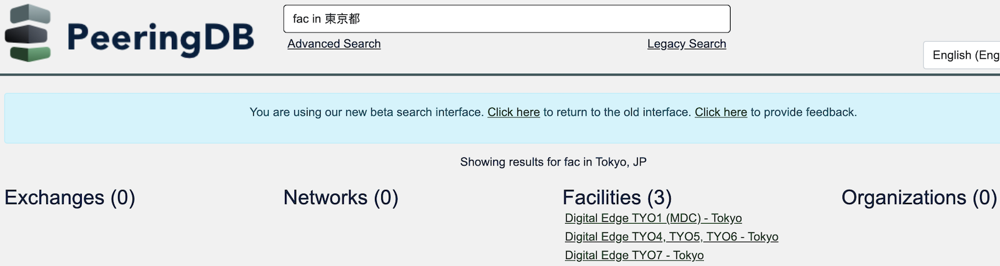
Networks
For this example, we have this network KENET which is a non-profit operator for education and research and we want to search for it on PeeringDB. There are two ways to search for networks in PeeringDB:
Name search
You can search for networks by using the name of the networks by:
- Entering the name of the network as seen below
- From the search result, under the Networks section, locate the network you have searched
- It would be visible if it is in the PeeringDB database
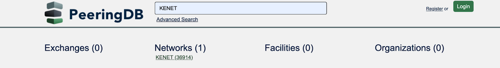
ASN search
You can search for networks using their ASN by:
- Entering the name of the network as seen below, for the example below the ASN is (36914)
- From the search result, under the Networks section, locate the network you have searched
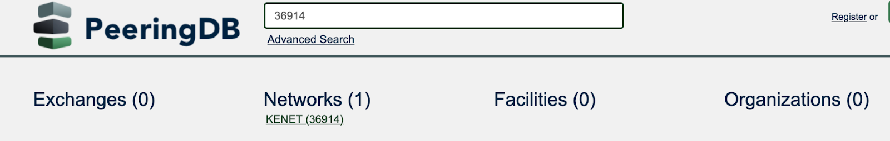
Note: Either of the two methods will get the same search results.
Exchanges
For this example, let’s consider this exchange UNY-IX which is an open Internet exchange located in Universitas Negeri Yogyakarta.
To search for an exchange:
- Enter the name of the exchange as shown below
- From the search result, under the exchanges section, locate the exchange you have searched
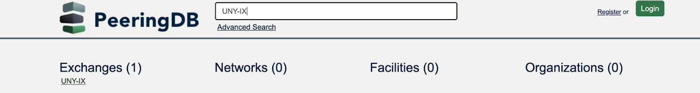
Facilities
Data centers are also referred to as facilities. For this example, let’s consider this university University of Oslo which is an institution in Oslo.
To search for a facility:
- Enter the name of the data center or facility as shown below
- From the search result, under the facilities section, locate the facility or data center you have searched
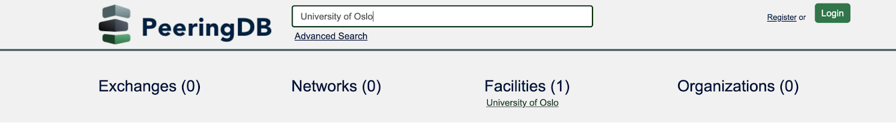
You can also search on a map, using our .KMZ download. You can either download it and load it into a GIS application or add it as a network location. Whichever you choose, you then search the map for names or by dragging it around. GIS applications often let you show PeeringDB data with other datasets, enabling a simple, visual, integrated analysis.
How to search for your own organization
If your organization already uses PeeringDB, when you are logged in to the website you can always find your own information using the self search. If you are not logged in, these links will take you to some PeeringDB examples objects.
The self identifier also works for queries made using our API. We encourage the use of multi-factor authentication. This means using an API Key instead of basic authentication for API queries.
How to use the search in PeeringDB extension
The PeeringDB search extension is a free to use Google Chrome extension with which you can use to search for ASNs, networks, and exchanges in PeeringDB.
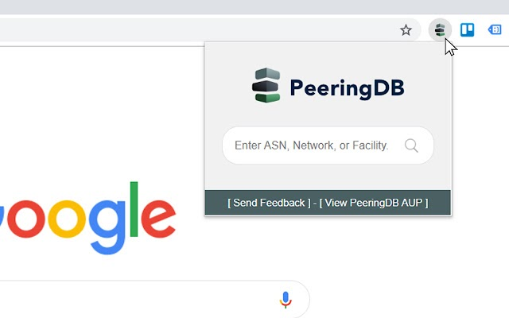
To get started, go to the Chrome Web Store and download the extension, then enable it and add it to your extension bar. There are two ways to use the extension once it has been enabled:
- Using the Extension Bar Icon: Click the icon and type your search term into the box. The search will open in a new tab with the search result.
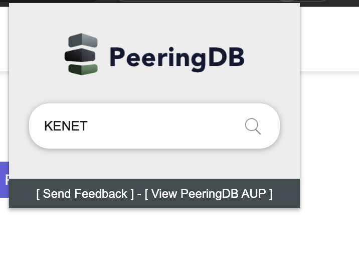
Below is the result:
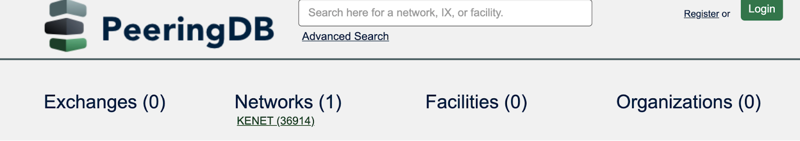
- Using the Context Menu: Right-click on any text on a page and select "Search in PeeringDB". The search will open in a new tab with the search result.
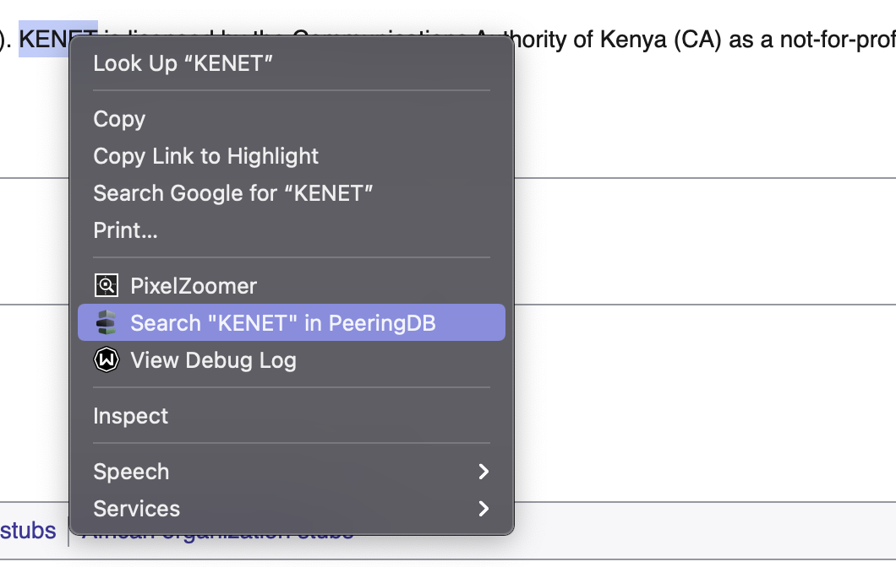
Below is the result:

If the query or highlighted text contains a number, the extension will attempt to find an ASN.
How to search based on a partial name
You can search based on a partial name. When an organization, network, facility or exchange name has two parts, you can search for just the first or second part and then select from all the organizations that share that name. This makes it easier to find the organization you want. This can also be helpful in a situation where you can not remember the name of the organization in full.
In the example below, we want to search for “internet archive”. We will search for it with a single part and not with the full name. In the search box, input “archive''. This brings out a search result that have similar parts in their names.
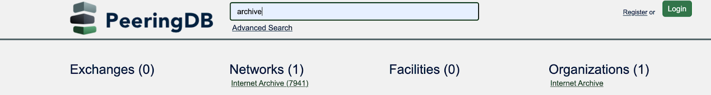
You can now search through the results to find the what you want.
What is an advanced search?
Advanced search in PeeringDB lets you explicitly filter a search location, network presence, service level and a wide range of other features. You get the results you’re looking for and can export them in structured data formats (JSON or CSV), so you can import the data into tools that will help you make decisions.
Note: You need to be logged in to PeeringDB in order to use some of the advanced search features, including the radius search.
Let’s take a look at this example below to demonstrate how advanced search works. We are going to search for an exchange within a particular region. On the front page of PeeringDB you will see the Advanced Search box which you can use to search for campuses, exchanges, facilities and networks that are in PeeringDB.
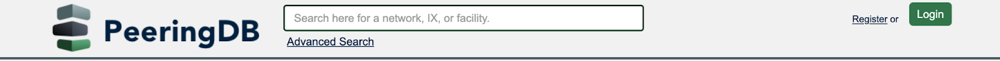
- Click on the Advanced Search link. This takes you to the advanced search landing page. The search page shows the campus, exchanges, facilities, networks, and organizations tabs.
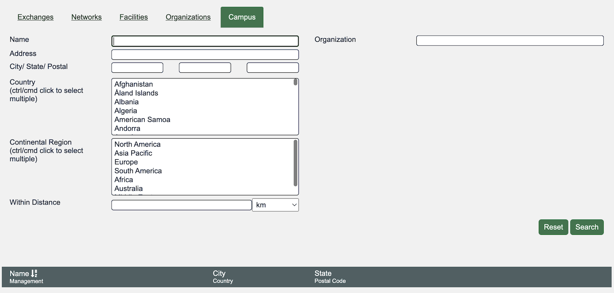
- Go to the Exchanges tab, in the country field select a country of your choice by scrolling through the different options.
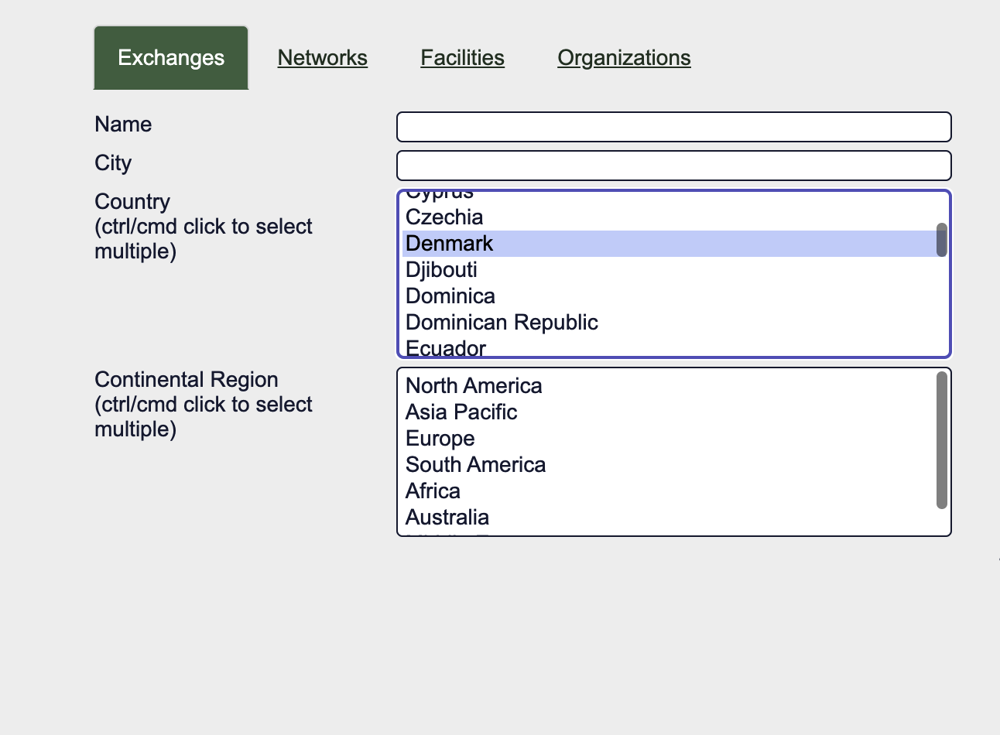
- On the right hand side, in the Network Presence field, enter the name of the network. You can follow the example shown below and add KENET.
- Click on the drop down list that appears as you input the network name.
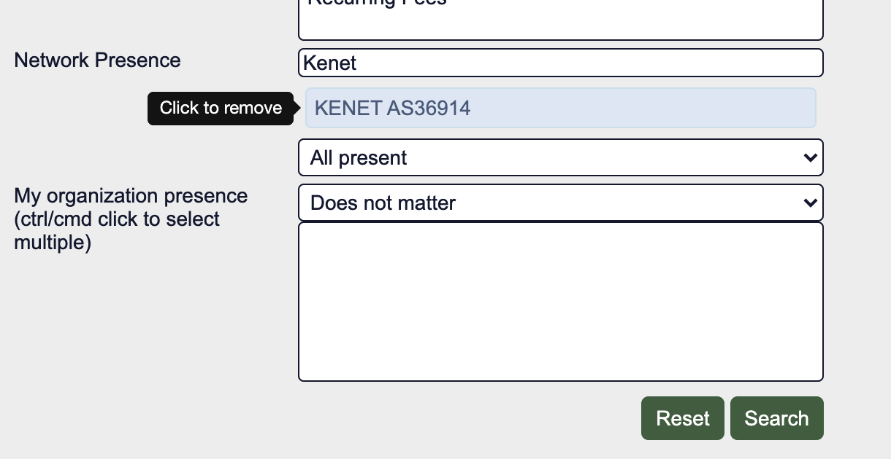
- Click on Search.
- Scroll down to view information regarding the exchange that you searched for.
- Click on JSON or CSV to download the information in a structured format.
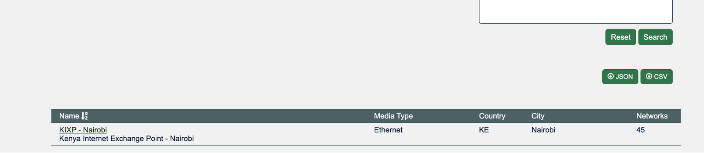
Geographic search
As new facilities are created in our database they will be linked to geographic coordinates. PeeringDB has improved search by changing the way it records data for location in its database. You can now search for facilities with a distance radius of a chosen coordinate.
How to search for a campus
You can search for a campus of facilities using the Advanced Search interface. Users can search from a country and city, and select a radius in kilometers or miles. Of course, you can achieve the same results using the API or the web interface, which means you can integrate this feature into your own tools.
Note: You need to be logged in to PeeringDB in order to search for a campus of facilities.
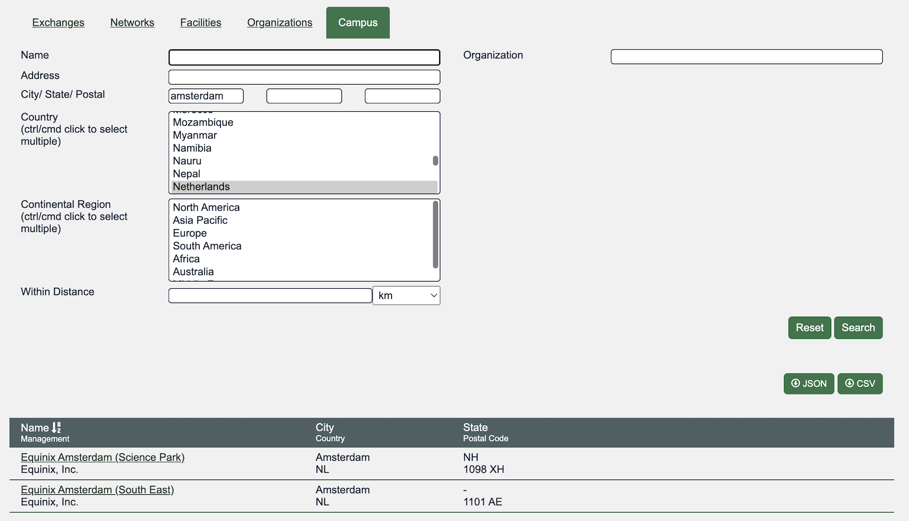
How to search for facilities within a given radius
You can search for facilities within a given radius, using the Advanced Search interface. Users can search from a country and city, and select a radius in kilometers or miles. Of course, you can achieve the same results using the API or the web interface, which means you can integrate this feature into your own tools.
Note: You need to be logged in to PeeringDB in order to search for facilities within a given radius.
- Login in or register an account on PeeringDB.
- On the front page of PeeringDB, click on the Advanced Search link.
- Go to the Facilities Tab and in the city/postal field add a city or postal of your choice.
- In the country field select a country of your choice.
- In the Within Distance field add a specified distance of your choice.
- On the right hand side of the page, click on search.
- Scroll down to view the information you searched for. The search result will bring up facilities which are in that country, city and state.
- You can download your information in a JSON or CSV format.
Querying with the PeeringDB API
Throughout this article up to this point, we have been talking on how to use PeeringDB to find information about potential peers, and then after peering has been arranged, using PeeringDB to obtain the peering details. The PeeringDB website is very helpful in these regards, but using the website still requires a lot of manual work. It’s also possible to use the PeeringDB API to automate some parts of this. Why use the PeeringDB API? The PeeringDB API makes it easy to integrate PeeringDB in your environment.
The PeeringDB database can be queried using a REST API. REST allows a client to request information from a server over HTTP or HTTPS. The server then returns the requested information in JSON format.
Get an API query from a web query
You can put the API query for simple and advanced searches directly into your copy buffer. Just click on the "Copy Query" button. It will present you with a screen that lets you choose that query formatted for curl, and a selection of programming languages.
You need to replace the placeholder with your own API Key for advanced queries. You can remove the authorization section anonymous simple queries. Note that anonymous users get a lower query limit.
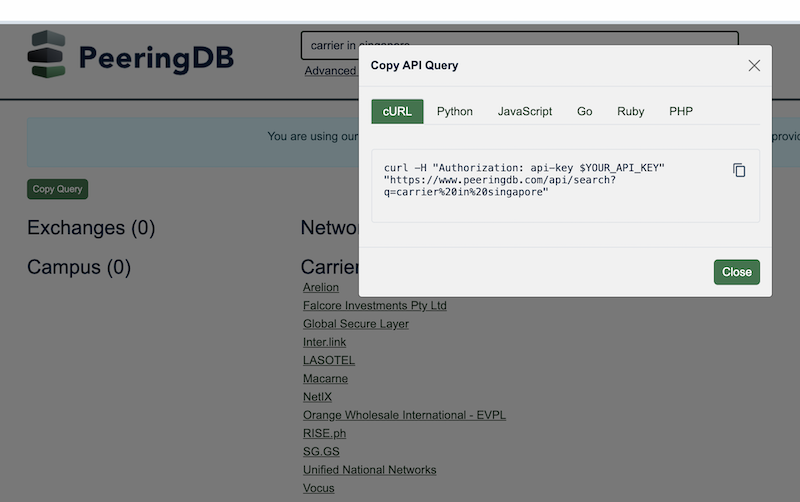
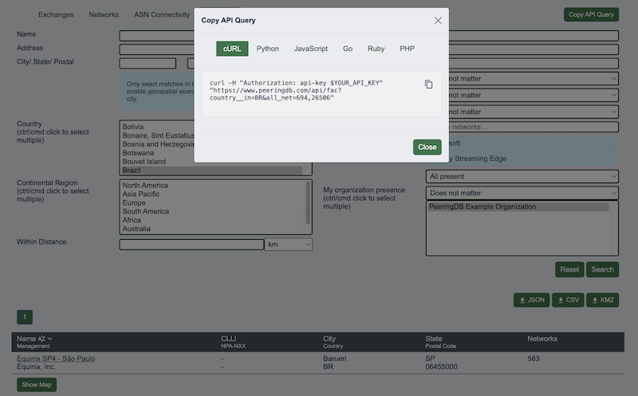
Object types
Each object has an associated shorthand tag you can use. Object types are not case sensitive and the output is an array.
For example: https://www.peeringdb.com/api/OBJ. The endpoint is: /api/OBJ.
Below are the categories of objects types (OBJ) in PeeringDB:
- Basic Objects: org, fac, ix, net, poc
- Derived Objects: ixlan, ixpfx, netixlan, netfac
Basic objects
Below is a description of what each of the object types mean and what information they return
- org: Root object for fac, ix, net, this holds information about an organization.
- fac: Describes a facility / colocation record, more useful information are in derived records netfac.
- ix: Describes an exchange, more useful information are in derived records ixlan, ixpfx and netixlan.
- net: Describes a network / ASN, more useful information are in netfac and netixlan.
- poc: Describes various role accounts (point of contact), this is currently only for net objects.
- as_set: Array of all AS-SETs corresponding to a network / ASN, this was introduced recently.
Derived objects
Below is a description of what each of the object types mean and what information they return.
- Ixlan: Describes the LAN of an ix, one ix may have multiple ixlan. This feature may go away in PeeringDB 3.0.
- ixpfx: Describes the IP range (IPv4 and IPv6) for an ixlan, one ixlan may have multiple ixpfx.
- netixlan: Describes the presence of a network at an exchange.
- netfac: Describes the presence of a network at a facility.
Authentication
Authentication is uses API Keys.
People who are accessing the API as a guest do not need any authentication. For example:
curl -sG https://www.peeringdb.com/api/net/961
Note: Access to contact information may be restricted if you are using the API as a guest without authentication. API usage is subject to query limits and these are set at a lower threshold for unauthenticated users.
Making a request
When making a request, the URL base is added with /api/, followed by the object type and, if applicable, the object primary key (if applicable). For example:https://www.peeringdb.com/api/OBJ/id.
If you want to select the output format, either use the Accept: HTTP header or use the extension type parameter:
- Accept Header: Accept: application/json
- Extension type:https://www.peeringdb.com/api/network/42.json
Operations
Using the GET operation you can retrieve information from the PeeringDB database. You can retrieve both a single object and multiple objects in an array. Let’s look at each of them individually.
Single object
To retrieve a single object you need to use this URL:https://www.peeringdb.com/api/OBJ/ID with this endpoint GET: /api/OBJ/id. The ID is a unique identifier and should be added to the URL when retrieving a single object. Let’s look at an example:
- HTTP:GET /api/OBJ/38 where 38 is the ID
- curl: curl -H "Accept: application/json" -X GET https://<username>:<password>@www.peeringdb.com/api/OBJ/38
There are optional parameters you can add to your URL:
- str: which retrieves a comma separated list of field names - only matching fields will be returned in the data
- int: which retrieves two nested sets and objects
Nested sets and objects
A nested set or object is any field ending in the suffix: set. For example: net_set will hold network objects. The naming schema of the field will always tell you which type of object the set is holding and will correspond with the object's endpoint on the API <object_type>_set. So a set called net_set will hold network objects (API endpoint /net).
Note: unlike GET multiple, depth here will also expand single relationships in addition to sets. So net_id would get expanded into a network object.
Unexpanded
{
...
"net_id" : 1
}
Expanded
{
...
"net_id" : 1
"net" : {
... network object ...
}
}
Depth
- 0: don't expand anything (default)
- 1: expand all first level sets to ids
- 2: expand all first level sets to objects
Multiple objects
To retrieve a single object you need to use this URL: https://www.peeringdb.com/api/OBJ/ with this endpoint GET: /api/OBJ/. Let’s look at an example:
- HTTP: GET /api/OBJ/ which is the endpoint
- curl: curl -H "Authorization: api-key $YOUR_API_KEY" "https://www.peeringdb.com/api/OBJ""
There are optional parameters you can add to your URL:
- limit: int limits rows in the result set
- skip: int skips n rows in the result set
- depth: int nested sets will be loaded (slow)
- fields: str comma separated list of field names - only matching fields will be returned in the data
- since: int retrieve all objects updated since specified time (unix timestamp, seconds)
- [field_name]: int|string queries for fields with matching value
Real world use cases
We will show you different use cases on how to use the PeeringDB API.
How do I query by ASN?
To query for an ASN using the PeeringDB API, you will need to use this URL: GET https://www.peeringdb.com/api/net?asn=42, where asn=42 is the query parameter.
How do I query for an IXs in a particular state?
To query for IXs based in a state (in countries with a state system), you will need to use a URL like this: GET https://www.peeringdb.com/api/ixfac?fac__state=NSW, where fac__state tells the API to look at the state field in the facility record and NSW is the normalized code for the state. In this example, NSW is the Australian state of New South Wales.
Similarly, https://www.peeringdb.com/api/ixfac?fac__state=NV gets IXs in facilities in the US state of Nevada.
Using curl
Use this curl example to get this specific network. Copy and paste the following to your command line interface: curl GET https://www.peeringdb.com/api/net?asn=42.
Using Python
To make use of this Python code, first, you’ll have to first install Python if you don’t have it installed. Then, install pip and requests. After that create a Python file and copy and paste the following code.
import requests
r = requests.get('https://www.peeringdb.com/api/net?asn=42')
print(r.text)
with open('output.csv', 'w+') as f:
f.write(r.text)
From the above code, we make a request to the API using the request module and print out the response which would be in a JSON format. However, reading a JSON file can be quite hectic and tasking so we convert the JSON file to a CSV file. Our CSV file will open in output.csv.
Using jq
You can use jq to make a request to your API and get your output in a CSV format. First, you need to install Jq. Next, we use this curl command to prepare our JSON file. Change to a directory and copy and paste this code on your terminal: curl https://www.peeringdb.com/api/net?asn=42 > test.json.
This creates a new file named test.json. To convert the JSON input file to the CSV format, copy and paste the following command: jq -r '(.data[0] | keys_unsorted), (.data[] | to_entries | map(.value))|@csv' test.json
Using an online converter
Alternatively you can use an online tool such as https://www.convertcsv.com/json-to-csv.htm to convert the raw JSON file to CSV.
Note: For the purpose of this article we will focus on the curl method but you can conveniently try out the other proposed methods.
How to get all the objects owned by https://www.peeringdb.com/net/961 and convert the data to CSV?
To get all the objects owned by this https://www.peeringdb.com/net/961 using the PeeringDB API. Copy and paste the following to your command line interface: curl GET https://www.peeringdb.com/net/961.
I want the list of networks and their 'type' peering at MICE in Minneapolis.
To get the list of networks and their type peering at Mice in Minneapolis, copy and paste the following command in your terminal: curl -s -X GET https://www.peeringdb.com/api/net?ix=446&__in=Minneapolis | jq '.data[].
How to find all the exchanges where my organization has a presence?
Use this curl example. Copy and paste the following to your command line interface: curl -s -X GET https://www.peeringdb.com/api/netixlan\?ixlan_id=62 | jq '.data[]'.
Improving this HOWTO
Please let us know how we could improve this article. Send a mail to the Outreach Committee.